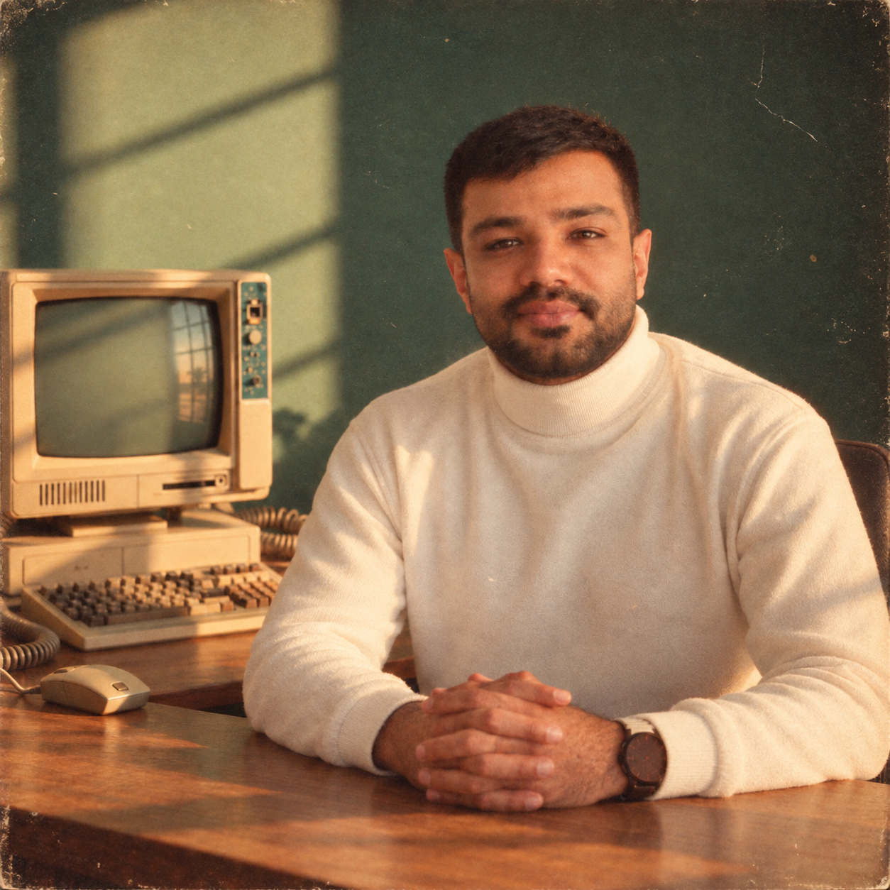
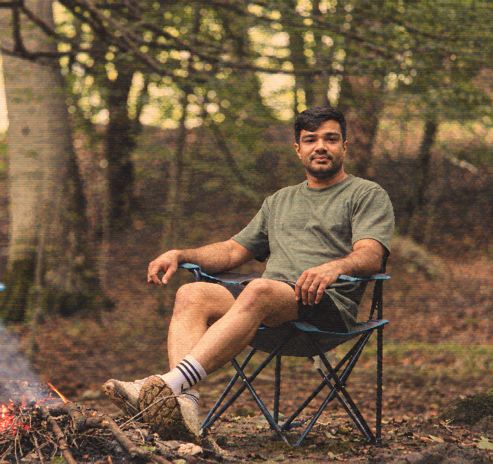

Startup strategy
& team building
Clarify the problem, shape the business model, define founder roles, and identify the capabilities your early team needs.
BUSINESS × FINANCE × HEALTH INNOVATION
Hello, I’m Mehdi Gitizadeh.
I help founders and investors shape ventures, prepare for fundraising, and enter new markets—with a focus on healthtech, AI, and pharmaceuticals.
Business Finance Partner at Cinnagen Group
Former CEO of Kara Accelerator · Based in Tehran

Finance & business development
Capital allocation at Cinnagen
Contributed to at Kara Accelerator
Publication rights sold at Bun Group
01 / HOW I CAN HELP
Practical support for the decisions that shape a venture: who to build with, how the numbers work, and where to grow.
Clarify the problem, shape the business model, define founder roles, and identify the capabilities your early team needs.
Turn your plans into a financial model, valuation, and investor story. Understand your funding needs and prepare for investor conversations.
Assess market opportunities, competitors, pricing, and unit economics. Build forecasts and scenarios to support better investment decisions.
Evaluate target markets, map potential partners and distributors, and shape a practical route to international growth.
Investors · AI teams preparing to raise · Biotech founders · ML & AI students exploring entrepreneurship

02 / THE PERSON BEHIND THE WORK
I started with robotics and mechanical engineering, then moved into business development, entrepreneurship, and finance. That path taught me to look at both how something works and what it takes to build a business around it.
Today, I’m a Business Finance Partner at Cinnagen Group, working with executives on capital allocation and portfolio performance. Previously, I led Kara Accelerator and worked with founders on financial plans, fundraising, and commercial growth.
I’m particularly interested in the people turning advances in AI and biotechnology into useful products—and the business decisions that help those ideas reach a market.
BSc Robotics Engineering · MSc Mechanical Engineering
PhD studies in Entrepreneurship
03 / MY PATH
From engineering and international trade to startup acceleration and pharmaceutical finance.
Understanding the technology.
Testing the business case.
Finding a way forward.
Cinnagen Group · Pharmaceuticals
Capital allocation across 12+ portfolio companies, financial oversight, and board responsibilities at Liosa and Ark Zist Azma.
Kara Accelerator · Healthtech
Supported startup financial planning and fundraising, contributing to three portfolio exits. As CEO from 2024, led operational and commercial improvements that increased revenue by 58%.
EdiPrints · SavvyTech · Fintranet
Co-founded a 3D printer venture with exports to Canada. Built financial models, valuations, and investor materials for startup and SaaS teams in Belgium and the UK.
Bun Group · Publishing
Sold publication rights in more than 10 countries and introduced CRM and business intelligence tools to track commercial performance.
Sokna Avaran Tehran · Nano Daru
Worked on international partnerships, commercial negotiations, and pharmaceutical export opportunities across Latin America and the CIS region.
04 / WHAT I’M EXPLORING
The areas I want to explore with founders, researchers, investors, and students.
How AI can improve decisions, research, and manufacturing—and where it can create meaningful business value.
How biotechnology and ML ideas can become focused products with a clear customer, a capable team, and a viable business model.
How ambitious teams can find the right markets, develop partnerships, and prepare for international expansion.
05 / START A CONVERSATION
Building a startup, evaluating an opportunity, or exploring the business side of your research? Tell me a little about it and where you could use support.
Start with your idea, your current stage,
and the question on your mind.